Componente Galería IFE Miró

La galería Integrated Framework Enviroiment (IFE) Miró toma su nombre el artista Joan Miró (1893-1983), en
donde los diferentes elementos de IFE son representados por iconos que
recuerdan las obras, formas y colores utilizados por el artista.
El
componente ofrece iconos para la identificación de los
diferentes elementos de compilación y depuración
necesarios en cada uno de los elemenos de CML. Estos elementos incluyen
representaciones gráficas de variables, métodos, librerías, archivos,
entre otras. La Figura 1 muestra parte de la interfaz de IFE utiliza para la compilación y depuración de aplicaciones.
El objetivo del componentes es generar un entorno agradable de uso para
la herramienta, ofreciendo iconos distintivos y vistozos, que apoyen la
creatividad en los procesos de diseño y desarrollo de software.
Estos son algunos de los iconos que se pueden encontrar en la Galería
CML Miró.
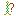
 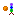
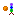
 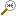
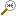


 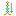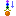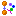
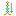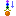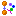